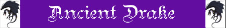

| Climate/Terrain | Colline e Montagne Temperate |
| Frequency | Uncommon |
| Organization | Solitary |
| Activity Cycle | Day |
| Diet | Carnivoro |
| Intelligence | Semi-intelligent (2 - 4) |
| Treasure | Nessuno |
| Alignment | Neutral |
| No. Appearing | 1 (1d3 in zone remote) |
| Armor Class | 4 |
| Movement | 6, Fl. 18 |
| Hit Dice | 3 + 3 |
| Thac0 | 17 |
| No. of Attacks | 1 Morso |
| Damage / Attacks | 1d8 |
| Special Attacks | Fiammata |
| Special Defenses | Nessuna |
| Magic Resistance | Nessuna |
| Size | Large (3 m. lunghi, ap. alare 5 m.) |
| Morale | Steady (12) |
| XP value | 275 |
Descrizione
Gli Ancient Drakes sono i più primordiali fra tutti i drakes. Assomigliano a grossi serpenti alati e non hanno sviluppati gli arti. Quando sono a terra camminano strisciando come serpenti con le ali chiuse intorno al corpo. Le loro scaglie sono maculate di colore rosso e verde scuro ed hanno una cresta di pelliccia arancione o giallastra lungo tutto il dorso.
Combat
Gli Ancient Drakes attaccano con il morso che provoca 1d8 danni da lacerazione. Possono inoltre soffiare fiamme ogni 5 rounds, solitamente utilizzano questo attacco per primo. Quando soffiano una lingua di fuoco può colpire un qualsiasi bersaglio si trovi entro 10 metri dal Drake. Se il bersaglio fallisce un tiro salvezza contro pietrificazione (modificato dalla destrezza) subirà 2d4 danni da fuoco, se invece il tiro salvezza riesce la vittima ha schivato la fiammata e non subisce danni.
Non hanno sensi particolarmente affinati, anzi la vista rudimentale di cui sono dotati gli impedisce di riconoscere bene i loro bersagli, per questo motivo attaccano qualsiasi cosa si muova e non sia di dimensioni superiori a Large.
Habitat/Society
Gli Ancient Drakes sono animali solitari, che vivono nelle colline o in territori brulli, costruiscono le loro dimore in stretti tunnel dove entrano strusciando come serpenti per trascorrere la fredde ore notturne riposando ma sempre attenti al pericolo (hanno un sonno molto leggero). Durante il giorno lasciano la loro tana per cacciare, pattugliano volando le colline e i valichi montani, ma volano a bassa quota superando difficilmente i 10 metri d'altezza dal suolo. Una volta uccisa la vittima la sbranano sul posto lasciando a terra i pochi resti dello sventurato.
Ecology
Gli Ancient Drakes si riproducano con uova che fecondano loro stessi essendo asessuati. Si ritiene, infatti sia questo il motivo per cui non si siano evoluti ulteriormente restando i più primitivi Drakes esistenti.
Mystical Resource Sourge
(Ghiadola Fuoco) Quantità: 1, Presenza 33% - Effetto Particolare:
Fuoco
- Qualità della Risorsa:
Common.
Mystical Resource Sourge
(Cuore) Quantità: 1, Presenza 15% - Scuola di Magia:
Enchantment
- Qualità della Risorsa:
Common.